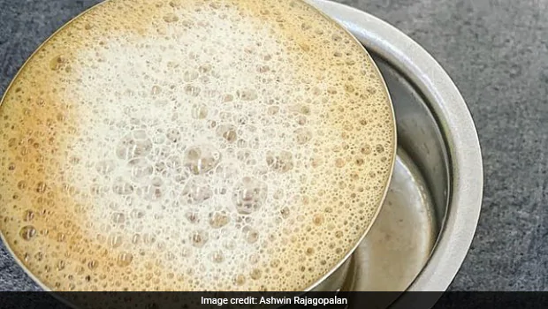

Filter Coffee

This recipe hails from the Southern parts of India. A very famous coffee which is filtered through a perforated container, mixed with some milk and served foamy.
Ingredients
- 1/4 cup coffee powder
- 1 cup water
- 1 cup milk
- Sugar to taste
Directions
- Place coffee powder in the perforated container that comes on top and place the container on the lower container.
- Boil the water and pour immediately over the powder.
- Place the press over it, cover and leave to drip into the lower container.
- When the entire solution has drained into the lower container, heat he milk and mix into the solution.
- Serve with desired amount of sugar.